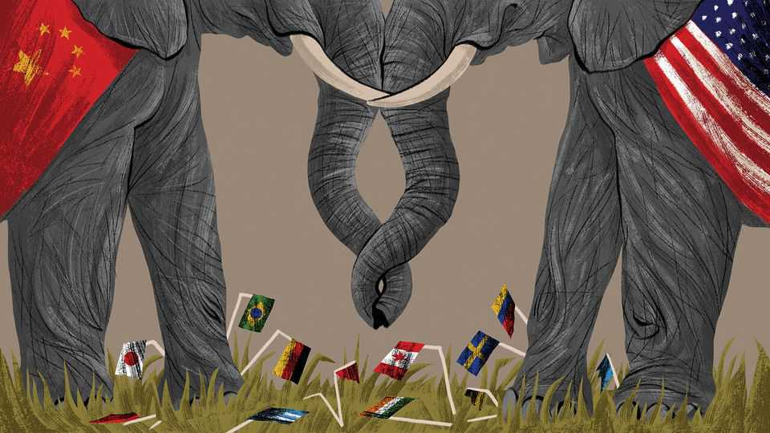
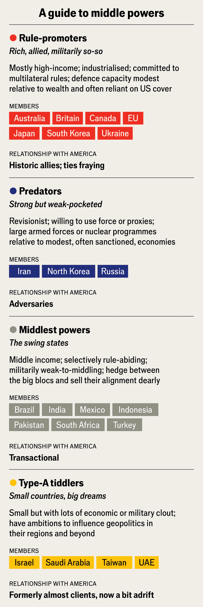
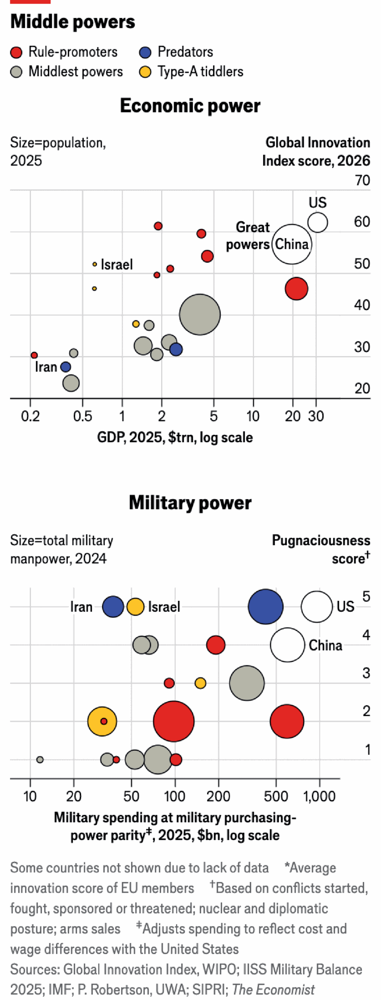
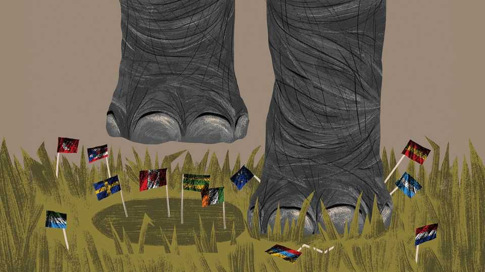

How to survive a predatory world order
Middle powers face a new threat: Trump-Putin-Xi collusion

Oct 15th 2026
LIKE a villager urging neighbours to confront a prowling predator together, Mark Carney sought to rally the world’s middle powers. In a speech in January to the World Economic Forum at Davos, Canada’s prime minister issued an urgent call for mid-ranked countries to unite. This is an age in which the strong prey on the weak, he told his audience of grandees. The old rules-based order no longer constrains the mighty, he advised. Nor can smaller countries roll over and hope that submission keeps them safe. Middling powers can act together in coalitions of the willing, or “be on the menu”.
His fellow leaders knew that Mr Carney was mostly warning them about America and China, the strongest of today’s big beasts. Mr Carney was speaking from experience. After decades as a comfortable, if unexciting, annexe to the American economy, Canada finds itself the object of President Donald Trump’s wrath. Mr Carney has worked hard to reduce his homeland’s dependencies. Other middle powers have studied his confrontation with Mr Trump closely. Yet nine months on, the response to that Davos call to arms looks distinctly patchy.
In some areas the Carney speech aligned with actions that countries were already taking. In this age of economic coercion, choke-points and supply shocks, governments do not need Mr Carney to tell them to hedge their bets, diversify and reduce the leverage of global bullies.
Since the speech, on a few occasions middle powers have stood up to large aggressors and lived to tell the tale. When Mr Trump threatened to invade Greenland and pledged to impose crippling tariffs on any country that stood in his way, European leaders stood by Denmark, Greenland’s ruler. Taken aback by a ferocious reaction from financial markets and by Europe’s stated readiness to enact trade counter-measures, Mr Trump dropped dreams of ownership in favour of an enhanced security pact.
Asia has witnessed shows of defiance, too. Despite intense pressure from China, including curbs on Chinese sales of critical minerals, Japan’s prime minister refuses to apologise for saying an inconvenient truth aloud. Takaichi Sanae’s offence was to confirm publicly that Japan’s national security would be imperilled by a Chinese attack on Taiwan, Japan’s democratic neighbour. As Chinese officials hurl insults and call her a war criminal, Ms Takaichi cannot back down, politically, and will not.
Yet for each instance of middle-power defiance, there are more examples of feebleness, and of leadership vacuums left unfilled. One big problem is that the middle powers are a disparate bunch, with differing degrees of nostalgia for the order that Mr Carney mourns. Plenty of countries in the global south have always seen America as a bully, and resent Western countries more generally as insufferably self-centred. Such regional heavyweights as Brazil, South Africa or India are not sure who appointed Canada—a blandly rich vanilla milkshake of a country—to lead a new post-American world order.

Further complicating Mr Carney’s pitch, there is no consensus as to who even counts as a middle power (see chart). One definition involves countries with some means to influence world events, whether that is a product of their size, regional clout, wealth, industrial and technological might, diplomatic networks or military power. Perhaps ten or 15 members of the G20 club easily fit the bill, from sundry European powers to Australia, Canada, Indonesia, Japan, Mexico, South Africa, South Korea and Turkey.
Brazil and India belong on the list, though some in those countries aspire to emerging great-power status. Russia thinks of itself as a nuclear-armed superpower, though its economic and demographic woes, and dependency on China, make it a pretty mangy big beast. For all that, Russia is more than a mid-ranking player: its president, Vladimir Putin, is one of a few foreign leaders treated as a peer by Mr Trump, and Russian aggression haunts the wakeful nights of politicians across Europe. There are small countries that control vital technologies, such as the Netherlands or Taiwan, both home to firms that are irreplaceable to semiconductor supply chains. Then come hyper-ambitious powers with commercial or military interests far from home, such as Israel, Saudi Arabia or the United Arab Emirates.
A simpler problem with the Carney speech is that it correctly noted the urgency of the moment, but misidentified the biggest threat currently posed by superpower bullies. The address opens with a warning about “great-power rivalry”, a reference to global struggles for primacy between dominant countries, notably America and China. Mr Carney called for “the countries in between” to avoid picking sides or competing with each other for the favour of the giants, and instead “combine to create a third path with impact”.
Nine months later, though, great-power rivalries are proving less disruptive than major-country collusion. Mr Trump is buying diesel from Mr Putin to lower fuel prices in America before midterm elections, and threatening to cut military aid for Ukraine. A fragile truce is, for now, lowering trade and other tensions between America and China. Already, diplomats report hearing officials from America and China proudly calling their respective countries a G2, or a uniquely potent power couple.
Then there is China’s and Russia’s ever-deepening, lopsided anti-Western partnership. Middle countries can stand up to one great power, on a good day. They have less hope of challenging two giants, defending overlapping interests in concert.
This geopolitical dynamic was accurately predicted, years ago, by Singapore’s far-sighted if ruthless founder, Lee Kuan Yew. “When elephants fight, the grass suffers,” Lee would say, describing how America-China confrontations endangered bystanders. There is a less-often cited second half to that warning, though: “When they make love, the grass suffers also.”
In theory, America and Russia are still adversaries. But in Washington horrified European allies find themselves being scolded by some officials in the Trump administration for backing Ukraine. Such support is called a provocation of Russia.
In New York diplomats at the UN express surprise at how closely America, China and Russia are working on some issues, especially the appointment of a new secretary-general. The suspicion is that those three permanent members of the Security Council favour a candidate who will administer the organisation, not challenge the big powers: a secretary, not a general, as the phrase goes at the UN.
It is not clear how long the current truce between America and China can last. It exists largely because of one man, who sits in the Oval Office. Mr Trump has never been an ideological China hawk, if that means someone who disapproves of the Communist Party’s iron-fisted rule. Now, in his second term, he has no interest in changing China’s ways, whether that means confronting China over its economic model or its regional ambitions. He is more interested in selling China soyabeans, flogging Boeing planes and securing supplies of Chinese rare-earth elements. To that end, he has told his diplomats and generals to avoid starting a war with President Xi Jinping and is holding up promised arms sales to Taiwan. Judging by their recent summit, neither Mr Trump nor Mr Xi is minded to heed calls from the rest of the world to permit more oversight of their respective champions of artificial intelligence.
That said, the truce with China could end at any moment, for Chinese leaders are playing hardball in large ways and small. In September Mr Trump wooed Mr Xi during that visit to Washington, meeting him in person at Joint Base Andrews, among other shows of respect. Mr Trump expected China to repay him with actions to help Republicans in the midterms, for instance by boosting Chinese diesel sales. Instead, China enraged the president by curbing diesel exports just days later. This instability points to an unenviable choice facing smaller powers. Do they prefer accommodation of China by Mr Trump, based on a division of the world into spheres of interest, or a resumption of full-blown rivalry between two giants?
A surprising number of political leaders express sympathy for Canada as a victim of Mr Trump’s bullying, but behind closed doors grumble about the naivety of Mr Carney’s advice that middle powers just need to be braver. Not every country is as lucky as Canada, they note. Canadians are blessed with abundant oil, gas and hydroelectricity. Secure in the high north of the Americas, deterring Russia is not the urgent task faced by some fellow members of NATO. Canada can confront America in a way that Europeans cannot, sniffs a senior European. In Japan and other Asian countries, there is impatience with Mr Carney’s talk of middle powers leading the world. Only America can deter China, it is said in Tokyo, and Canada is not about to save us.
True, in the months since his Davos speech, middle powers have pulled off some modest wins. Take the trade dispute between China and the European Union, the 27-member bloc that is by far the most integrated and powerful coalition of middle powers (see charts). Ahead of a European summit on October 15th at which EU leaders will debate whether to create powerful new trade weapons, China appears to have offered voluntary cuts to exports of plug-in hybrid vehicles.

This is a footling concession, though: sales of hybrid cars are not a core Chinese interest. China’s ambitions to control Taiwan are of a different magnitude. If war breaks out over the island there is no coalition of middle powers that could make China back off. Only America intimidates the hard men who run the People’s Liberation Army. Defying Mr Trump over Greenland was, for that matter, a low-stakes fight. Owning that Arctic island was a peculiarly Trumpian obsession, not a cause with popular support among Americans.
Foreign governments look sceptically at another claim in the Carney speech, namely that middle powers can replace a lost, American-led order with one of their own. Diplomats tick off challenges that cannot be solved without deep American (and indeed Chinese) engagement, from tackling climate change to the prevention and management of pandemics and, most urgently of all, the governance of AI.
Middle powers are rapidly diversifying their defence relations. With America becoming a less reliable ally and an overstretched arms supplier, NATO members are buying more kit from such players as Sweden, Italy and France. Several European governments are keen on a French offer to extend its nuclear umbrella over the continent, though as an adjunct to America’s much larger deterrent.

With Patriot missile interceptors in short supply, Gulf states are snapping up South Korean air-defence systems. Ukraine is selling anti-drone defences to Gulf states under attack from Iran. In a 2026-worthy twist, Ukrainian firms have an edge because the drones that Ukraine shoots down over its territory are based on Iranian designs that were upgraded by Russia and which are now going back to Iran.
In other spheres, when middle powers seek greater autonomy, they are often balancing one hegemon against another. Many Western countries dislike relying on China for critical minerals. The main viable alternative is to join buyers’ clubs for non-Chinese minerals that are built around the G7 countries and led by America. Governments worried by their dependence on fossil fuels from the Middle East or America are turning to Chinese-made solar panels, windmills and batteries.
Even when coalitions of mid-ranking countries do emerge, not all of them are benign, or fit into Mr Carney’s vision of a principled world order underwritten by members of Team B. The main principle being upheld by the Mecca agreement, a collective-defence pact signed in August by Pakistan, Saudi Arabia and Turkey, is that others should think twice before messing with that trio. Loose groupings of ambitious regional powers are meddling on each side of Sudan’s ghastly civil war.
The starkest examples of middle-power irrelevance involve AI. With America and China far ahead, and locked in a struggle for primacy, there are few signs, for now, of serious co-operation between the giants on AI safety and governance. In a bid by the rest of the world to be heard, in September Finland and Norway called for controls on frontier AI models. Dozens of countries have signed the appeal. Britain has not. It hopes for a special AI relationship with America, based on its leading research centres and its AI Security Institute, and close ties between spy agencies.
A separate group of countries, led by the Netherlands and South Korea, has held meetings since 2023 to argue for Responsible Artificial Intelligence in the Military Domain (REAIM, to use their snazzy acronym). Kenya will host the next REAIM summit. America attends the meetings, which is a positive first step, for the Trump administration refuses to engage with such bodies as the UN on AI rule-making.
More broadly, there is little evidence that America and China are interested in the views of AI also-rans. True, it is possible that the Trump administration’s current suspicion of AI regulation will be shaken by staggering new capabilities in frontier models. But even if more support emerges for slowing work at the frontier in America, the objection—that China might take the lead—will remain unavoidable. Plausibly, America may seek to slow Chinese labs by further tightening their access to high-end chips and the tools for making them. Or the full-speed-ahead crowd may win the day, with America accelerating AI research despite concerns about models causing catastrophe, for fear of letting China build catastrophic capabilities first.
In times of staggering risks and opportunities, great powers rarely show magnanimity towards their lessers. And there lies the challenge for the mid-ranked rest. In a speech still being talked about nine months later, Mr Carney rightly noted the ending of a post-1945 order that was good to Canada and its peers. His optimistic solutions are ageing less well. Vigilance and courage are admirable traits in a leader and in a country. But when dangers loom, there is no arguing with strength.■